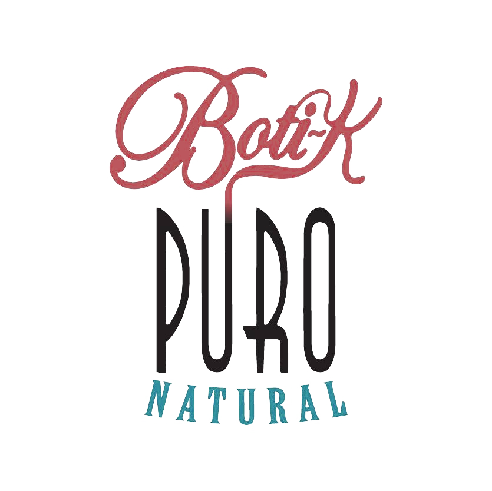
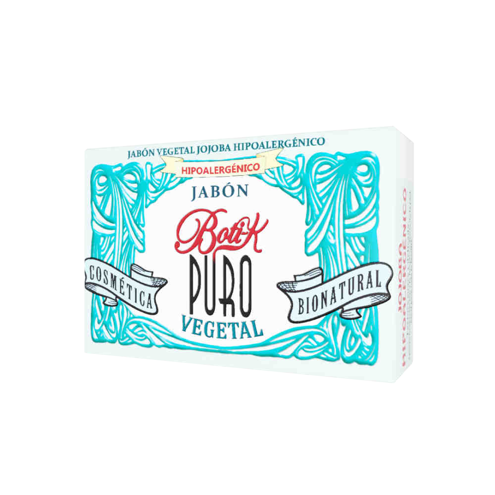
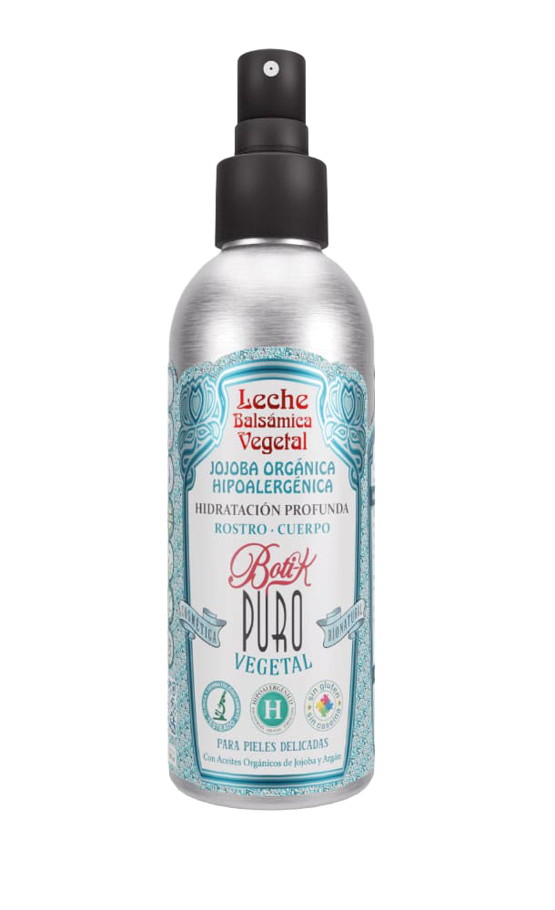

Cosmética e higiene bionatural — estudio de caso & campaña de fidelización
Introducción
La industria de la cosmética ha experimentado una transformación radical en la última década, alejándose de los componentes sintéticos para abrazar el concepto de "Clean Beauty". En este contexto, se selecciona a la empresa Boti-K Pure como objeto de estudio, una organización argentina que opera en el rubro de la cosmética e higiene bionatural. La marca se destaca por su propuesta de valor centrada en la pureza de los ingredientes, eliminando derivados del petróleo, parabenos y fragancias artificiales.
Su sitio web oficial (boti-k.com) funciona no solo como un canal de ventas estilo e-commerce, sino como una plataforma educativa sobre la salud de la piel. La elección de esta marca responde a su coherencia entre el discurso ecológico y su ejecución comercial, lo que permite observar la transición desde un marketing orientado al producto hacia un marketing social, donde el objetivo primordial es el bienestar del consumidor y de la sociedad a largo plazo.
Historia de la organización
La trayectoria de Boti-K Pure es un testimonio de cómo una necesidad personal puede transformarse en un modelo de negocio disruptivo. La empresa nació en 2009 de la mano de sus fundadores, Ignacio Conde y Florencia Villamil Delfabro, impulsados por la búsqueda de una solución para la piel extremadamente sensible de su hijo, Santino. Este hito fundacional marcó el ADN de la organización: la creación de productos seguros para personas con patologías específicas.
Para el año 2011, la marca ya se posicionaba como pionera en el desarrollo de jabones 100% vegetales en Argentina, cubriendo un nicho de mercado desatendido por la cosmética masiva. Entre 2012 y 2017, Boti-K logró una expansión sin precedentes a través de canales de distribución indirectos como dietéticas y farmacias especializadas, logrando que el producto estuviera al alcance del consumidor consciente en todo el país.
En 2018, la empresa reportó un crecimiento en su facturación del 89%, lo que permitió profesionalizar aún más su comunicación digital. En la actualidad, y a partir del 2021 y 2022, la marca inició su proceso de internacionalización, exportando a mercados como Taiwán y Rusia, y lanzando su ambiciosa campaña "Cero Plástico" para eliminar los envases contaminantes, reafirmando su compromiso con la sostenibilidad ambiental.
Planificación estratégica
La planificación estratégica de Boti-K Pure es el proceso mediante el cual la organización establece sus prioridades y asigna recursos para alcanzar su meta final. Según lo visto en clase, este proceso busca analizar las necesidades del mercado para brindar soluciones efectivas, orientando a la empresa hacia oportunidades atractivas en el largo plazo. Dado que esta información no está textualmente citada en el sitio web de la empresa, a continuación definiremos la misión, visión y valores de Boti-K. Estos datos han sido redactados por nosotras a partir del análisis de la sección "Nosotros" del sitio oficial de la marca (Boti-k.com, s.f.) y el artículo de Forbes Argentina (2019) sobre la historia de sus fundadores.
Misión
El propósito en el mercado — la razón de ser de la organización. Responde a "¿cuál es nuestro negocio?" y "¿quién es nuestro cliente?".
La misión de Boti-K Pure es proveer soluciones de higiene y cosmética de origen vegetal y bionatural que garanticen la máxima pureza y seguridad dermatológica. Su foco está puesto en personas con pieles sensibles o patologías específicas que valoran la transparencia en los ingredientes. Esta misión se alinea al concepto de "soluciones en lugar de productos" de Levitt, ya que la marca nació de la necesidad real de los fundadores por encontrar una respuesta a la sensibilidad extrema de su hijo (Forbes Argentina, 2019).
Visión
El punto de partida del proceso: la aspiración de la organización a largo plazo. Es inspiracional y marca el propósito de la empresa en el mundo.
Boti-K Pure aspira a consolidarse como la marca líder en cosmética bionatural de Latinoamérica, siendo reconocida globalmente por su innovación sustentable y su capacidad para transformar la industria de la belleza hacia un modelo más ético y honesto. Esta visión actúa como el norte inspiracional que guía su expansión internacional actual hacia mercados como Brasil y el límite con Paraguay (y aún más allá de Latinoamérica, el sudeste asiático) (Boti-k.com, s.f.).
Valores
Expresan el "cómo" se van a lograr la misión y la visión. Son los principios esenciales que rigen las tareas diarias de todos los colaboradores.
- ❀Transparencia: honestidad total en la composición de las fórmulas.
- ❀Inclusión: desarrollo de productos aptos para celíacos y diversas afecciones dérmicas.
- ❀Responsabilidad ambiental: compromiso con la eliminación de plásticos y el respeto por el medio ambiente (Boti-k.com, s.f.).
Estos valores sirven para la validación de la marca en el entorno digital, donde el consumidor actual exige compromiso, integridad y coherencia entre el discurso y la acción.
Marketing operativo
El marketing operativo se ocupa del desarrollo y ejecución de acciones tácticas en el corto plazo, teniendo como herramienta fundamental el Marketing Mix. Analizamos a continuación dos productos emblemáticos de la marca: el jabón vegetal de jojoba y la eco leche balsámica facial.


Producto
El producto se define como cualquier bien material, servicio o idea que posee valor para el consumidor y satisface una necesidad, debiendo enfocarse no solo en atributos físicos sino en los beneficios y experiencias que proporciona. En este sentido, Boti-K Pure no comercializa simplemente cosméticos, sino soluciones de bienestar e higiene natural diseñadas para personas con sensibilidad extrema o patologías como la rosácea. El jabón vegetal de jojoba es un bien material formulado sin grasas animales ni químicos sintéticos, cuyo valor reside en el aceite de jojoba orgánico que actúa como regenerador celular, validado por sellos oficiales como Cruelty Free, Vegan y Sin TACC. La Eco leche balsámica es una emulsión hidratante diseñada para pieles con rosácea o sensibilidad extrema, ofreciendo una experiencia de uso multifuncional que limpia, hidrata y calma. Además, la marca integra una identidad visual de naturaleza bella con la estética Art Nouveau contemporáneo, lo cual ayuda a que la marca y el envase sean atractivos a la vista y aumenta el valor para quien disfruta de los productos estéticos. La marca, asimismo, tiene un fuerte compromiso con la sostenibilidad mediante su campaña "Cero Plástico" y sistemas de envases refill de la leche con promociones especiales para fomentar su compra.
Precio
El precio es el pilar de la estrategia, representado por su valor expresado en unidad monetaria, pero está intrínsecamente relacionado con el valor percibido por el consumidor. Es uno de los componentes de la estrategia competitiva. El precio de estos productos se posiciona por encima de los jabones industriales de supermercado, ubicándose dentro de un segmento premium de cosmética natural. El jabón ronda los $14.000 ARS dependiendo del punto de venta y promociones vigentes en el e-commerce oficial. La leche tiene un valor aproximado de $31.000 ARS, según el formato y canal de distribución. Además del valor asociado a la formulación dermatológica y bionatural, el sistema refill permite reducir costos de recompra y residuos plásticos. El precio se justifica por el ahorro económico a largo plazo que supone el sistema de recarga y por el beneficio psicológico de contribuir a la sostenibilidad, alineándose con los valores del target. La marca ofrece beneficios de compra online, como descuentos por transferencia bancaria (5% a la fecha de redacción del trabajo). El precio elevado se justifica mediante la utilización de ingredientes orgánicos, fórmulas hipoalergénicas y procesos de producción artesanales. Esta estrategia se justifica por la percepción de valor del consumidor, quien está dispuesto a realizar un mayor sacrificio económico a cambio de los beneficios funcionales y psicológicos que ofrece la marca: la seguridad dermatológica, la pureza de las materias primas orgánicas y el ahorro a largo plazo que suponen los formatos sólidos y recargables.
Plaza
La plaza abarca todas las decisiones de logística y canales de distribución destinadas a que el producto esté accesible para el consumidor en el momento y el lugar deseado. Para la gran mayoría de sus productos, incluyendo el jabón, Boti-K Pure ha desarrollado una red de distribución mixta que asegura la conveniencia del consumidor en todo el país. Por un lado, cuenta con canales físicos estratégicos que incluyen dietéticas, farmacias especializadas, locales propios y puntos de venta en aeropuertos. Por otro lado, su canal digital principal es el sitio web oficial (boti-k.com), el cual funciona como un local comercial abierto las 24 horas, los 365 días del año, permitiendo la compra directa y facilitando el acceso a consumidores que no cuentan con tiendas físicas cercanas. La empresa cuenta con diversas formas de envío o entrega para asegurar una distribución amplia: envíos a todo el país con OCA, envíos locales con cadetería propia, retiro en sucursales de OCA (estas tres opciones con un costo agregado) o retiro en sucursal propia. Para la Eco leche balsámica, la marca utiliza una distribución más selectiva, priorizando el canal online y tiendas hiper especializadas de cosmética natural donde el personal puede brindar asesoramiento técnico sobre el uso del sistema de recarga.
Promoción
La promoción consiste fundamentalmente en la comunicación del valor de la marca al mercado, con el fin de informar, persuadir o recordar. La marca promociona todos sus productos principalmente mediante redes sociales, a partir de contenido educativo y publicaciones centradas en los beneficios funcionales de los ingredientes. Mientras que en Instagram fomentan la interacción con la comunidad y el uso de testimonios de prosumidores, en Pinterest actúan como fuente de inspiración visual vinculada directamente al e-commerce. La marca también utiliza storytelling para narrar su historia fundacional basada en una necesidad familiar, lo cual genera una conexión emocional profunda que la diferencia de sus competidores tradicionales. Con ello, logran alcanzar validación social mediante testimonios de usuarios, reseñas en medios digitales y notas periodísticas como Forbes Argentina o Emprendi2tv.
Buyer persona
- Edad
- 42 años
- Género
- Femenino
- Personalidad
- Analítica, cautelosa, consciente y con una fuerte inclinación hacia la transparencia
- Estudios
- Universitario completo (Contadora Pública)
- Ingresos
- Medio-alto
❀¿Cuáles son sus intereses y deseos?
¿Trabaja? ¿Estudia?
Trabaja como contadora en el sector corporativo.
¿Qué hace en su tiempo libre?
Pasa tiempo con su familia y la familia de su marido. Ocasionalmente se junta con amigas. Investiga sobre salud bionatural, lee sobre el concepto de "clean beauty" y busca testimonios de personas con afecciones similares.
¿Le gusta viajar? ¿Qué libros lee? ¿Qué series ve?
No viaja mucho, ha hecho poco turismo interno. Mira series policiales durante las cenas. Prefiere libros de temática romántica.
Actividades sociales
Prefiere reuniones tranquilas con colegas; valora los espacios que no comprometan su salud ni la expongan a factores ambientales agresivos.
¿Hace deportes? ¿Sale a bailar? ¿Reuniones presenciales o virtuales?
No hace deportes ni tiene una vida nocturna muy activa porque le disparan su condición dérmica. El sudor, la energía de los boliches, el alcohol y trasnochar no son sus aliados.
❀¿Dónde se encuentra?
¿Dónde vive / trabaja?
Vive y trabaja en el centro de Córdoba Capital, un entorno urbano con alta exposición a contaminación y aire acondicionado. Se traslada en colectivo, suele ir escuchando el podcast La Cruda.
Si le gusta salir a comer, ¿qué lugares prefiere?
Prefiere comer en su casa o las de sus amigas/familia. Si debe hacer una salida, elige ir a MISKA, una cafetería que se especializa en obviar el gluten, cosa que evita.
¿En dónde le gusta pasar el rato?
En su hogar, la casa de sus amigas o familia, buscando crear un ambiente de calma frente al estrés diario.
¿A dónde va a buscar el producto?
Principalmente en dietéticas, farmacias especializadas cercanas a su trabajo y en el sitio web oficial de la marca.
❀¿En qué momentos…?
¿Cuándo trabaja/estudia?
Durante el horario comercial, enfrentando situaciones de estrés laboral que a menudo disparan su rosácea.
¿Cuándo tiene tiempo libre?
Por las noches y fines de semana, momentos que dedica a sus rutinas de autocuidado y limpieza facial.
❀¿Por qué…?
¿Qué es lo que más le gusta del producto?
La pureza de los ingredientes naturales, la ausencia de tóxicos, fragancias artificiales y derivados del petróleo.
¿Qué marcas considera / no compraría?
Considera marcas con sellos oficiales (cruelty free, vegan); jamás compraría cosmética masiva con químicos agresivos o marcas de lujo que oculten ingredientes bajo nombres técnicos.
¿Qué hace después de la compra?
Se convierte en una cliente leal una vez que comprueba que el producto no le genera reacción adversa, y lo recomienda por su confianza técnica.
❀¿Qué hace en digital?
¿En dónde le gusta pasar el rato online?
En Instagram buscando contenido educativo o entretenido, y en TikTok.
¿Consume contenido en digital?
Sí, le gustan los formatos educativos y los testimonios reales de los productos que le interesan, especializados en bienestar y salud dérmica. Escucha música y podcasts, y le gustan las cuentas de marcas locales/nacionales. Le gusta mirar recetas de alimentos que le ayuden a mantener su piel estable.
¿Produce contenido en digital?
Sube historias personales y posteos cuando se junta con sus cercanos.
¿En qué momento del día está en redes sociales?
Durante su almuerzo en el trabajo y mientras cocina la cena.
¿Compra por internet? ¿En sitio web? ¿En Mercado Libre?
Sí, compra por vías digitales muchas veces. Dependiendo de la opción o el costo, sigue prefiriendo ir a asesorarse en persona.
¿Qué le genera desconfianza/confianza en internet?
Valida el contenido de los perfiles en redes a los que les quiere comprar, asegurándose de que sea todo verídico. Se fija en el tipo de contenido que suben, si hay opiniones o comentarios negativos. Si es vía Mercado Libre, se fija en la puntuación del vendedor y los comentarios de compradores previos. Ante la posibilidad de pagar contra entrega o vía transferencia, opta por pagar contra entrega.
Campaña integral digital

Tipo de campaña
Seleccionamos la etapa de fidelización. El objetivo aquí no es captar nuevos clientes, sino retener a Elena, incentivar la re-compra y transformarla en una promotora de la marca.
A Elena la identificamos por ser una compradora que está dispuesta a mostrar su conformidad con el producto, la marca y el cambio en su piel. Esto significa que si el producto cumple con lo que promete, ella no solo volverá a comprar, sino que lo recomendará genuinamente a su entorno. Y, si bien no es una usuaria que se sentirá cómoda produciendo contenido en sus propias historias o en posteos de Instagram, sí está dispuesta a sumarse a la conversación en la plataforma de la marca.
Como ella tiene un perfil analítico y prioriza lo limpio de los ingredientes y las marcas con sellos que lo avalen, su fidelidad está unida a la ética y transparencia de la empresa. No es fiel por un descuento acumulativo, sino por la calidad y la pureza del producto que cuida su rosácea.
Redes sociales
La campaña se concentrará únicamente en Instagram, justificándose bajo el comportamiento real de Elena y el uso común de esta red social:
Sintonía con sus rutinas y micro-momentos
Elena utiliza Instagram de manera habitual en momentos muy específicos del día: durante el almuerzo laboral o mientras cocina la cena. Es una red de consulta rápida y de consumo fluido, ideal para conectar con ella en sus momentos de descanso diario sin irrumpir de forma invasiva.
Espacio de auditoría y confianza
Para un perfil analítico como el de Elena, el uso principal de Instagram es la validación. Ella declara que cuida mucho los perfiles de redes a los que les compra y revisa comentarios y opiniones. Instagram es la plataforma por excelencia para esto, ya que permite mantener un feed ordenado que actúe como vitrina de transparencia (mostrando sellos, ingredientes y certificaciones) y secciones de comentarios abiertas donde se aloja la prueba social.
Canal bidireccional para generar conversación
Dado que Elena no es creadora de contenido en sus cuentas personales, Instagram ofrece las herramientas perfectas (cajas de preguntas en Stories, hilos de comentarios en Reels o publicaciones estáticas) para que ella pueda expresarse, dejar su testimonio y conversar de forma directa con la marca. La marca aprovecha el uso común de la red como una comunidad horizontal donde la voz de la clienta en los comentarios es el activo de fidelización más valioso.
Piezas propuestas
El reel de la rutina facial (etapa de Descubrimiento) y el carrusel de top 5 beneficios del jabón de jojoba (etapa de Consideración) caen en la categoría Educar de la matriz, porque van directo al lado analítico y cauteloso de Elena; al exigir transparencia y lo limpio de los ingredientes, estos contenidos de índole racional le dan los datos puros y el paso a paso que necesita para revalidar el producto en su día a día.
En la categoría de Inspirar se ubican el reel creado en conjunto a la especialista y el del Día Mundial del Océano, porque conectan con su constante búsqueda de bienestar y testimonios; el aval científico de autoridad desarma su desconfianza post-compra, mientras que la movida ecológica toca sus valores conscientes y le da el espacio ideal en la sección de comentarios para generar conversación con la marca sin tener que exponer su cuenta personal.
Por último, en Entretener entran las historias coyunturales sobre el Mundial, que aprovechan sus momentos de desconexión diaria para conectar a través del humor y la complicidad nacional, logrando que interactúe con la marca de forma lúdica y afiance su fidelización de manera orgánica.